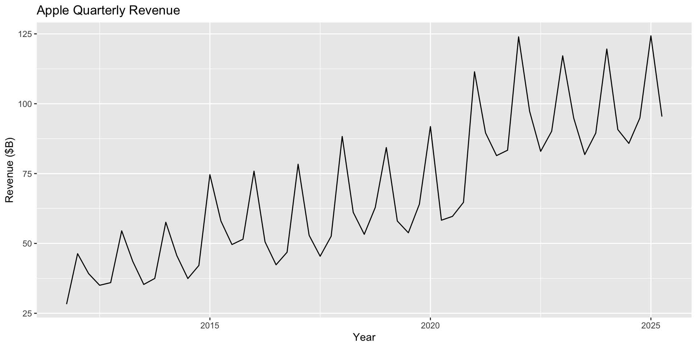
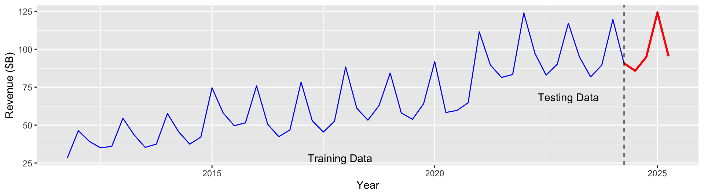
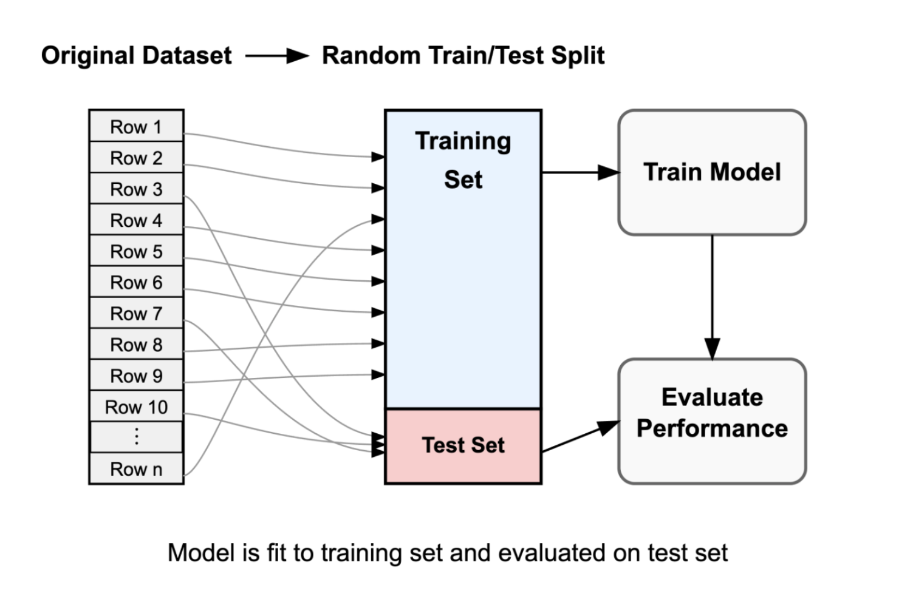
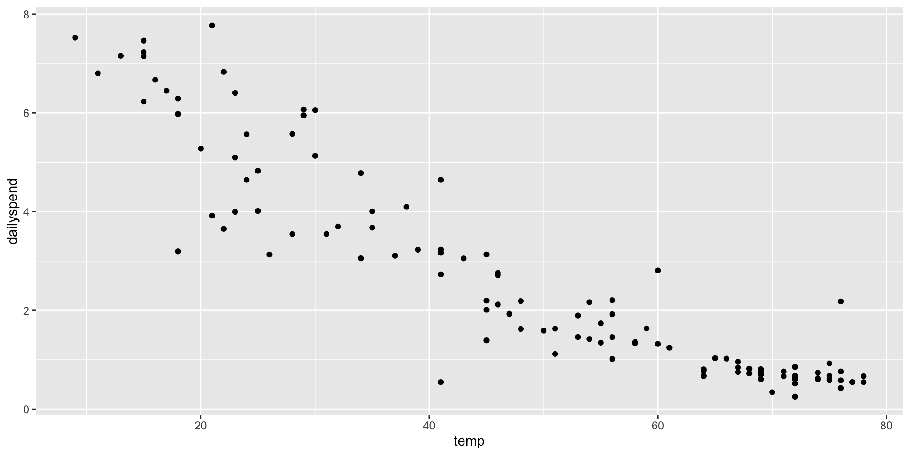
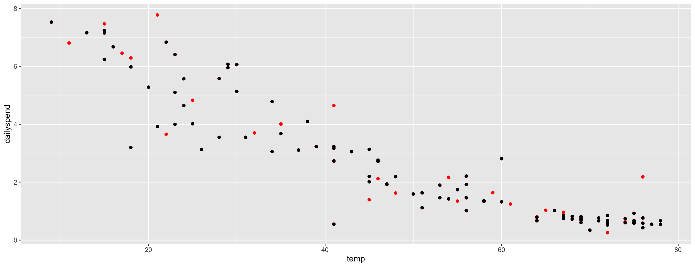

Mastery Exam A is 7-9 PM on Wednesday, October 22 or Thursday, October 23 (your choice—sign up for a time using the survey link sent out).
The exam covers Unit A (weeks 1-7, including today).
The exam will be on Canvas using Respondus.
You can bring 1 full-sized page of notes (whatever you want, as long as you make it yourself).
Two types of questions:
Conceptual and computational questions like the homework and quizzes
Open-ended questions that ask you to apply the concepts to a new business situation and write up your analysis in paragraph form
Practice material for the exam is posted in Canvas.
Two reasons for building regression models
Prediction: Predict the value of \(Y\) based on the values of the \(X\) variables (today)
Understanding: Understand the relationships between \(Y\) and the \(X\) variables (later in the semester)
How we evaluate a model depends on what our use for it is.
Evaluating forecasts
How should we evaluate a forecast?

apple <- apple %>%mutate(COVID =ifelse(Period >=38& Period <=45, 1, 0),lag1 =lag(Revenue))model4 <-lm(log(Revenue) ~ Period + Quarter + COVID +log(lag1), data=apple)summary(model4)
Call:
lm(formula = log(Revenue) ~ Period + Quarter + COVID + log(lag1),
data = apple)
Residuals:
Min 1Q Median 3Q Max
-0.164955 -0.047524 -0.006454 0.044278 0.149002
Coefficients:
Estimate Std. Error t value Pr(>|t|)
(Intercept) 2.472570 0.387615 6.379 0.00000007169178 ***
Period 0.010331 0.002215 4.664 0.00002593255364 ***
QuarterQ2 -0.471450 0.049927 -9.443 0.00000000000197 ***
QuarterQ3 -0.487549 0.026755 -18.223 < 0.0000000000000002 ***
QuarterQ4 -0.352342 0.025851 -13.630 < 0.0000000000000002 ***
COVID 0.109412 0.029754 3.677 0.000605 ***
log(lag1) 0.413292 0.111170 3.718 0.000535 ***
---
Signif. codes: 0 '***' 0.001 '**' 0.01 '*' 0.05 '.' 0.1 ' ' 1
Residual standard error: 0.06482 on 47 degrees of freedom
(1 observation deleted due to missingness)
Multiple R-squared: 0.9716, Adjusted R-squared: 0.968
F-statistic: 267.9 on 6 and 47 DF, p-value: < 0.00000000000000022
If you were an analyst, how impressed would your boss be if you claimed to be able to predict the past? (Not very — they want you to be able to predict the future!)
How should we evaluate a forecast?
\(R^2\) and the residual standard error are optimistic measures of predictive performance.
They measure the quality of predictions using the same data used to fit the model.
But we’re interested in how the model predicts into the future, not how well it fits the past!
We can mimic predicting on future data by holding back the most recent observations.
Fit the model to the “training” data only (blue) and test the model by forecast the most recent year of data (red).

Fitting the model to the training set
We want to split our data into a test set (last 4 quarters) and a training set (everything else).
training <- apple[1:51,]test <- apple[52:55,]
Then we want to fit the model to the training data and test it on the test data.
model4 <-lm(log(Revenue) ~ Period + Quarter + COVID +log(lag1), data=training)
Testing the model on the test set
Now we can see how well the model predicts the test set.
predict(model4, test)
52 53 54 55
4.377099 4.502806 4.918158 4.558995
These are predictions for log revenue, so we need to convert them back to revenue:
exp(predict(model4, test))
52 53 54 55
79.60673 90.27005 136.75045 95.48747
How do we compare this to the actual revenues of the last 4 quarters?
test.Rev = test$Revenue
Measuring prediction error
Mean squared prediction error (MSE or MSPE) lets us compare all 4 predictions to the actual revenues at once:
billion dollars on average when forecasting the future.
A shortcut for calculating RMSPE
# exp here only because we're predicting log(Revenue) instead of Revenuepredictions <-exp(predict(model4, test))actuals <- test$Revenuesqrt(mean((predictions - actuals)^2))
[1] 7.328273
Training/test splits in general
Train/test splits to measure performance

Randomly allocating observations makes training/testing sets representative of the full data set
80/20% training/testing splits are common
More testing data \(\to\) More accurate estimates of prediction error
More training data \(\to\) Better representation of full-data fit
Predicting utility expenditures

Creating a train/test split
Let’s do the same thing for the utilities data, but by randomly splitting the data into a training and test set.
library(tidyverse)set.seed(9529)# Ask R to shuffle all 117 observationsrandomized <-slice_sample(utilities, n =117)# 24 is about 20% of 117, so we'll use the first 24 rows as our test setutilities_test <- randomized[1:24,]# The rest are our training setutilities_train <- randomized[25:117,]
The set.seed(9529) command ensures reproducible “random” splits. (I chose this number because it’s my EID number; use your EID number!)
Creating a train/test split
Black = training data, Red = testing data
Random splitting is important! (What would happen if we trained on fall-spring and tested on summer?)

Using training/test splits to pick between competing models
When comparing models, we want to pick the one that minimizes prediction error on the test set — we want to avoid overfitting to the training data!
When we fit to the entire data set, we might overfit to the training data and get an overly optimistic estimate of prediction error on new data.
A linear (1st-degree) polynomial model
model1 <-lm(dailyspend ~ temp, data=utilities)
Call:
lm(formula = dailyspend ~ temp, data = utilities)
Residuals:
Min 1Q Median 3Q Max
-2.84674 -0.50361 -0.02397 0.51540 2.44843
Coefficients:
Estimate Std. Error t value Pr(>|t|)
(Intercept) 7.347617 0.206446 35.59 <2e-16 ***
temp -0.096432 0.003911 -24.66 <2e-16 ***
---
Signif. codes: 0 '***' 0.001 '**' 0.01 '*' 0.05 '.' 0.1 ' ' 1
Residual standard error: 0.8663 on 115 degrees of freedom
Multiple R-squared: 0.841, Adjusted R-squared: 0.8396
F-statistic: 608.1 on 1 and 115 DF, p-value: < 2.2e-16
For every model, RSE is too optimistic about how well the model will perform on new data
Our initial train/test split was unlucky! It over-estimated the RMSE
Isn’t there a faster way?
In practice, you don’t have to do this all manually! The tidymodels package makes it easy to do cross-validation even for larger \(k\).
library(tidymodels)# Randomly split the data into 5 foldsfolds <-vfold_cv(utilities, v=5)# Build a tidymodels "workflow" for a linear model# with the formula dailyspend ~ temp, using RMSE as the target metricworkflow() %>%add_model(linear_reg()) %>%add_formula(dailyspend ~ temp) %>%fit_resamples(folds, metrics=metric_set(rmse)) %>%collect_metrics()
# A tibble: 1 × 6
.metric .estimator mean n std_err .config
<chr> <chr> <dbl> <int> <dbl> <chr>
1 rmse standard 0.871 5 0.0857 pre0_mod0_post0